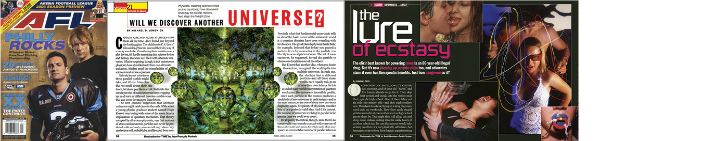
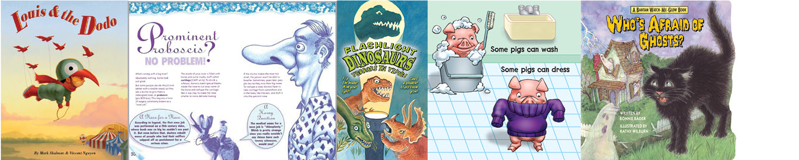
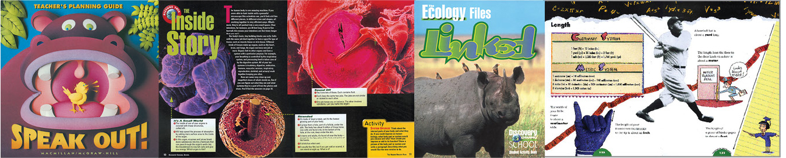
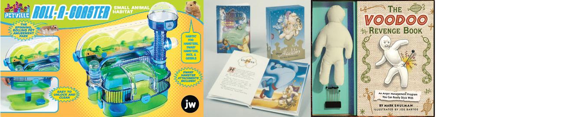

graphic design AND illustration
Joe has a passion for
expressing ideas with images and words. He found an early creative outlet as an award winning editorial cartoonist for his high school and college newspaper. Joe branched out from there with the paper as a columnist, editor and art director, later founding his own campus periodical with friends.
After a brief stint in Denver as a newspaper cartoonist and designer, Joe moved on to graduate school in NYC and a career in graphic arts. Primarily designing and illustrating magazines and books on a project basis or as a long term freelancer, he has handled the full print design cycle in his 25+ years in New York.
His work experience includes:
prototyping, layout, art buying, illustration and handling production for many NY media companies. He has also recruited, trained and supervised designers and illustrators for a number of publishing projects. Design clients have included Time Warner, Hearst, the NY Times, Disney, Scholastic, Macmillan, McGraw Hill, Barnes and Noble, the Discovery Channel, the Comedy Channel, National Lampoon and Pearson Education, among others.
The latest chapter in Joe’s life has led him to add digital publishing and website design to his resume after further studies in NYC. Sensing a chance to participate in how images and words will increasingly be merged in the 21st century, he looks forward to creating beautiful designs and images for a new generation.
MAGAZINES

CHILDREN'S BOOKS

EDUCATIONAL

PACKAGING
